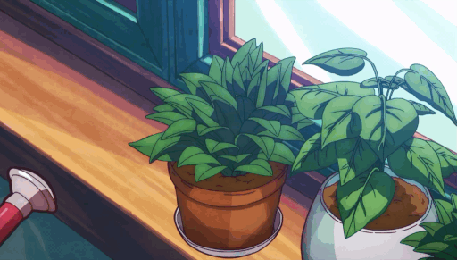

Começar um jardim ou uma horta pode
parecer um desafio, principalmente para quem nunca teve experiência em plantio. Mas, cultivar plantas ou
alimentos pode ser muito mais simples do que parece, se você seguir algumas dicas de quem já tem experiência.
Com isso temos aqui algumas dicas para você que deseja começar a cultivar
OBS: as dicas foram retiradas desse site
aqui
e também deste site
aqui
1.Use substratos de qualidade
Antes de escolher qual substrato você vai
comprar, analise quais são os nutrientes que ele possui. Não opte apenas pelo mais barato. As plantas precisam
de um solo nutritivo para se desenvolverem, principalmente quando são cultivadas em vasos, caixas ou em qualquer
outro recipiente.
Toda planta precisa de uma base para se
desenvolver. Algumas preferem um solo arenoso, outras gostam mais de uma terra fofinha e úmida, e há ainda
algumas espécies que só crescem apoiadas nos troncos de árvores!
Mas o que é substrato? É justamente esse elemento: a base que dá sustentação para o crescimento da planta.
Pode parecer pouco, mas é uma função mais importante do que você imagina!
Sem o substrato correto, a planta dificilmente irá se desenvolver. Afinal, ele é o caminho utilizado para os
nutrientes chegarem aos caules, folhas e flores!
TIPOS DE SUBSTRATO
É muito importante conhecer os tipos de substratos para poder recriar o ambiente mais próximo ao original.
Continue lendo para saber mais.
1. Terra vegetal
Esse é um dos tipos de substratos orgânicos que se adapta à maioria das plantas. Não é à toa que geralmente é o
tipo de substrato mais utilizado! Encontrar terra vegetal é fácil, basta visitar a área de jardinagem da Petz!
Hoje, esse produto é comercializado já preparado e embalado. Diferentemente do que se pode imaginar, os pacotes
de terra vegetal não contêm apenas terra, mas um delicado composto com fertilizantes e elementos naturais.
Para quem gosta de se aventurar pela jardinagem, ter um pacote de terra vegetal em casa é essencial!
2. Areia
Pode parecer estranho pensar na areia como um tipo de substrato, não é mesmo? Afinal, não é comum encontrarmos
nascendo nesse tipo de terreno. Entretanto, a areia é fundamental para o desenvolvimento de algumas espécies!
Esse é um ótimo tipo de substrato para suculentas e cactos, pois essas plantinhas precisam de um substrato muito
permeável, que acumule pouca água. Para isso, um solo arenoso é fundamental! Assim, é comum vermos areia na
composição do substrato de algumas plantinhas.
3. Casca de pinus
A casca de pinus é outro substrato orgânico curioso, mas muito utilizado. Plantas que crescem em árvores,
como as orquídeas, precisam de uma base com muita casca de pinus.
Esse material simula perfeitamente seu habitat natural e permite que as flores se desenvolvam em vasos e outros
ambientes domésticos! Além disso, a casca de pinus é considerada um substrato seco. Assim, é utilizada quando
é necessário deixar o solo menos úmido.
4. Fibra de coco
A fibra de coco, por sua vez, se destaca por reter a umidade. Assim, é comum misturar um pouco de fibra de coco
na terra de plantinhas que gostam de água. Também é muito utilizada no substrato de orquídeas para criar um
ambiente próximo a seu habitat natural. A fibra de coco ainda auxilia a manter o pH da terra neutro.
5. Turfa
A turfa é outro material muito utilizado quando se deseja reter líquido. Natural de regiões pantanosas, esse
produto é rico em nutrientes e, por isso, é muito utilizado no mundo da jardinagem. Algumas plantas, como as
samambaias, precisam de um substrato rico em turfa para manter sua saúde em dia!
6. Argila expandida
A argila expandida é um grão grande e sólido, muito utilizado para drenar o solo. Por isso, é comum usar argila
expandida na base do vaso, facilitando o escoamento de água.
Vale lembrar que poucas espécies gostam de
terra encharcada e, por isso, esse é um processo muito importante. Alguns jardineiros também gostam de colocar
argila expandida sobre a terra, dificultando a evaporação da água e mantendo a planta úmida por mais tempo.
7. Substratos prontos
Por fim, devemos lembrar dos substratos prontos, encontrados em lojas especializadas! Esses
produtos são desenvolvidos por especialistas, e já contém a medida exata necessária para sua plantinha.
Hoje, é possível encontrar substrato para plantas de diversas espécies, como orquídeas, suculentas, cactos,
entre outras! Basta visitar a Petz mais próxima para encontrar o produto perfeito para seu jardim.

2.Pesquise qual deve
ser o manuseio adequado para o seu plantio
Quando falamos em cultivar alimentos, cada um tem suas particularidades. É muito importante conhece-las, para
garantir que eles serão produtivos sempre. Portanto, quando escolher o que plantar, veja também quais serão os
cuidados no futuro. Por exemplo: cenoura e feijão são sensíveis a perturbações nas raízes, portanto, não devem
ser plantadas em vasos e depois transplantadas para outro solo. Já o tomate pode ser cultivado em vasos e depois t
ransportado para espaços maiores.
3.Saiba do que a sua planta gosta
Algumas plantas gostam de passar longos períodos no sol, enquanto outras se desenvolvem melhor à sombra. Os
tomates vão muito bem com o sol, mas o alface, agrião, espinafre e muitos outros precisam de uma sombrinha.
4.Forneça a quantidade certa de água
Assim como o sol, a quantidade de água é determinante para garantir o desenvolvimento das plantas. A maior
parte delas não gostam de solo seco, mas nem todas gostam de muita água. A chave para o sucesso é manter uma
rela regular. O simples toque na terra já dá para perceber se ela está seca ou úmida. O ideal é mantê-la sempre
úmida, mas, lembre-se: pode ser que a sua espécie goste mais de água, por isso, sempre pesquise as condições
ideais antes de qualquer decisão.
5.Aprenda com os seus
erros e não tenha medo de falhar
O melhor jeito de aprender é fazendo. Não tenha medo de tentar e nem de pedir ajuda quando necessário. Ao
longo do tempo você perceberá que o caminho do conhecimento é cheio de testes e erros, são eles que nos ajudam
a aprender e entender melhor como as coisas funcionam. Isso vale para a jardinagem e para a vida.
Temos Videos para recomendar também!!!
Gostou das dicas a cima, mas precisa de algo mais...
visual?? então você está no lugar certo!!
Com isso temos aqui top 5 videos para ajudar você nesta jornada!!
1.Horta Vertical, passo a passo como fazer 03 tipos de Horta!!
2.COMO FAZER UMA HORTA SUSPENSA EM CASA (EM 1 MINUTO PASSO A PASSO)
3.Aprenda a fazer uma HORTA na CAIXA! Perfeito para apartamento! | Marieli Mallmann
 Social Green Initiative
Social Green Initiative